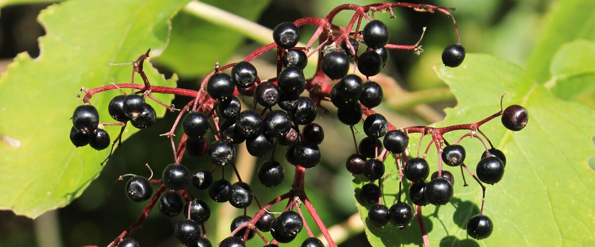

Oregon · Washington · Idaho
When to plant elderberries
Plant in the garden: Portland and Seattle Mar 1 – Apr 26; Spokane Apr 1 – May 27; Boise Mar 20 – May 15; Bend Apr 28 – Jun 23.
Your dates in
Elderberries are large shrubs grown for flat clusters of creamy flowers and dark berries. The flowers make cordials and fritters, and the berries, always cooked, go into syrup, jam and pie. Blue elderberry, a native with a dusty white bloom on its berries, is the native kind people eat here.
Puts elderberries on your free plan, with dates for your town and a spot in your beds.
- Difficulty
- Easy
- Sun
- Full sun to part shade
- Spacing
- 6 to 8 feet apart
- Planting depth
- Same depth as in the pot
- Frost
- Hardy perennial; comes back every year
- First harvest
- Some berries in year two; full crops from year three
Fast, tough shrubs for flowers, birds and syrup. The berries must be cooked before eating, and the leaves, stems and unripe berries are toxic. Native red elderberry is not for eating.
Elderberry planting dates
| Towns | Plant in the garden |
|---|---|
| Portland, OR, Seattle and Tacoma, WA | Mar 1 – Apr 26 |
| Spokane, WA | Apr 1 – May 27 |
| Boise and Meridian, ID | Mar 20 – May 15 |
| Bend and Redmond, OR | Apr 28 – Jun 23 |
| Astoria, OR | Mar 25 – May 20 |
Dates for six main towns. For any of the other 110 towns, type it in the box at the top of the page or browse all towns.
| Gresham, OR, Oregon City and West Linn, OR, Portland, OR, St. Helens and Scappoose, OR, Wilsonville and Canby, OR | Mar 1 – Apr 26 |
|---|---|
| Hillsboro and Beaverton, OR | Mar 5 – Apr 30 |
| Corvallis and Albany, OR, Eugene, OR, Salem, OR | Mar 1 – Apr 26 |
|---|---|
| Cottage Grove, OR, Oakridge, OR | Mar 13 – May 8 |
| McMinnville and Newberg, OR | Mar 4 – Apr 29 |
| Ashland and Talent, OR | Mar 25 – May 20 |
|---|---|
| Cave Junction, OR | Mar 20 – May 15 |
| Grants Pass, OR, Medford, OR, Roseburg, OR | Mar 1 – Apr 26 |
| Astoria, OR, Brookings and Gold Beach, OR, Coos Bay and North Bend, OR, Florence, OR, Newport and Lincoln City, OR, Port Orford, OR, Tillamook, OR | Mar 25 – May 20 |
|---|
| Bend and Redmond, OR, Klamath Falls, OR | Apr 28 – Jun 23 |
|---|---|
| Burns, OR | Apr 30 – Jun 25 |
| Lakeview, OR | Apr 23 – Jun 18 |
| Madras, OR, Prineville, OR | Apr 20 – Jun 15 |
| Baker City, OR, Condon, OR, Enterprise and Joseph, OR, John Day, OR | Apr 20 – Jun 15 |
|---|---|
| Heppner, OR, Hermiston, OR, Hood River, OR, Ontario, OR, Pendleton, OR, The Dalles, OR | Mar 20 – May 15 |
| La Grande, OR | Apr 1 – May 27 |
| Bremerton and Port Orchard, WA, Everett, WA, Kent, Renton and Auburn, WA, Seattle and Tacoma, WA | Mar 1 – Apr 26 |
|---|---|
| Olympia, WA | Mar 18 – May 13 |
| Shelton, WA | Mar 16 – May 11 |
| Anacortes, WA, Bellingham, WA, Blaine, WA, Friday Harbor and the San Juans, WA, Mount Vernon and Burlington, WA, Oak Harbor and Whidbey Island, WA | Mar 1 – Apr 26 |
|---|
| Aberdeen and Hoquiam, WA, Forks, WA, Long Beach and Ilwaco, WA, Raymond, WA | Mar 25 – May 20 |
|---|---|
| Port Angeles, WA, Port Townsend, WA | Mar 1 – Apr 26 |
| Sequim, WA | Mar 10 – May 5 |
| Centralia and Chehalis, WA | Mar 11 – May 6 |
|---|---|
| Longview and Kelso, WA, Vancouver, WA | Mar 1 – Apr 26 |
| Chelan, WA, Wenatchee, WA | Mar 20 – May 15 |
|---|---|
| Leavenworth, WA, Omak and Okanogan, WA | Apr 1 – May 27 |
| Republic, WA | Apr 18 – Jun 13 |
| Winthrop and Twisp, WA | Apr 3 – May 29 |
| Cle Elum, WA, Ellensburg, WA | Apr 1 – May 27 |
|---|---|
| Dayton, WA, Ephrata and Quincy, WA, Moses Lake, WA, Sunnyside, Grandview and Prosser, WA, Tri-Cities (Pasco, Kennewick, Richland), WA, Walla Walla, WA | Mar 20 – May 15 |
| Goldendale, WA | Apr 7 – Jun 2 |
| Pomeroy, WA | Mar 21 – May 16 |
| Yakima, WA | Mar 27 – May 22 |
| Chewelah, WA | Apr 4 – May 30 |
|---|---|
| Colville, WA, Newport, WA, Pullman, WA, Ritzville, WA, Spokane, WA | Apr 1 – May 27 |
| Davenport, WA | Apr 25 – Jun 20 |
| Deer Park, WA | Apr 10 – Jun 5 |
| Bonners Ferry, ID, Coeur d'Alene and Post Falls, ID, Sandpoint, ID, St. Maries, ID, Wallace, ID | Apr 1 – May 27 |
|---|---|
| Kellogg, ID | Apr 2 – May 28 |
| Grangeville, ID, Moscow, ID | Apr 1 – May 27 |
|---|---|
| Lewiston, ID | Mar 20 – May 15 |
| Boise and Meridian, ID, Emmett, ID, Nampa and Caldwell, ID | Mar 20 – May 15 |
|---|---|
| Cascade, ID | Apr 20 – Jun 15 |
| McCall, ID | May 11 – Jul 6 |
| Arco, ID, Ashton, ID, Challis, ID, Salmon, ID | Apr 20 – Jun 15 |
|---|---|
| Blackfoot, ID, Burley and Rupert, ID, Glenns Ferry, ID, Idaho Falls, ID, Pocatello, ID, Rexburg, ID, Twin Falls, ID | Apr 1 – May 27 |
| Driggs, ID | May 2 – Jun 27 |
| Malad City, ID | Apr 10 – Jun 5 |
| Preston, ID | Apr 4 – May 30 |
Elderberry year at a glance
| Task | J | F | M | A | M | J | J | A | S | O | N | D |
|---|---|---|---|---|---|---|---|---|---|---|---|---|
| Plant | Mar | Apr | ||||||||||
| Harvest | Aug | Sep | ||||||||||
| In bloom | Jun |
Around Portland. Colder towns, especially east of the Cascades, run a few weeks later; the table above has your town's planting dates. Harvest months are for an established plant.
How to grow elderberries
- Pick a sunny spot with soil that drains well, and mix in an inch or two of compost.
- Plant elderberry shrubs on your town's dates, 6 to 8 feet apart. Same depth as in the pot.
- Plant two varieties for better crops. Water through the first summer, and cut out old, weak canes in late winter to keep the shrub productive.
- Harvest: Cut whole clusters when nearly all the berries are dark and soft. Strip the berries off the stems and cook them before eating.
Growing elderberries in your part of the Northwest
The same plant behaves differently on the wet west side, the foggy coast and the dry, colder east side.
West-side valleys
Willamette Valley, Puget Sound, southern Oregon
Blue elderberry is native and easy; red elderberry is also native but its raw fruit is toxic.
East of the Cascades
Columbia Basin, Yakima, Boise, Spokane, north Idaho
Blue elderberry is native to dry east-side areas and handles heat.
More elderberry varieties
More widely sold picks that do well somewhere in the Northwest. The tag says which part of the Northwest suits each one best.
Blue elderberry
The Northwest native with dusty blue berries that make excellent syrup when cooked. It feeds birds and pollinators and handles summer drought once established.
Both sides
York
One of the largest-fruited American elderberries, with big, heavy clusters. Plant with Adams or Nova for pollination.
Both sides
Adams
A vigorous, productive variety with large clusters of dark berries that ripen together. A good partner for York.
Both sides
Nova
A compact, productive elderberry with relatively sweet berries for syrup and jam. Partners well with York or Adams.
Both sides
How much to grow
How many to plant
Plant two varieties for better crops. For a family of four, 2 to 3 plants.
What to expect
About 12 to 15 pounds per mature plant.
Storing the harvest
Freeze clusters, then strip berries. Always cook before eating.
Key numbers
- 6–12 feetShrub size
- Most, even dampSoil
- Year 2–3First crops
- Raw berries and stemsBiggest risk
Top care tip: Cut out old, weak canes each late winter, and always cook the berries before eating.
Growing notes
What makes the difference in Northwest gardens, in plain language.
Which elderberries to grow
Blue elderberry is native across much of the Northwest, from sunny west-side valleys to the dry east side, and its berries are the edible kind when cooked. American and European elderberry varieties like York, Adams and Nova are bred for bigger fruit clusters and grow well on both sides of the Cascades. Red elderberry, the common native on the west side, is lovely for birds but its berries are not for eating.
Safety in the kitchen
Elderberry leaves, stems, roots and unripe berries contain compounds that can cause nausea and vomiting. Strip ripe berries off every bit of stem (freezing the clusters first makes it easy), and always cook them into syrup, jam or pie. The flowers are also edible and make a classic cordial.
Planting and care
Elderberries are fast, tough shrubs that tolerate damp soil, some shade and neglect. Plant two varieties for better crops, water through the first summer and keep mulch around the shallow roots. Canes fruit best in their second and third years; cut out older ones at ground level in late winter. They spread by suckers, so give them room or mow around them.
Good neighbors
Good neighbors
- Another elderberry variety. Cross-pollination gives bigger crops.
Pests and problems
What most often goes wrong with elderberries in Northwest gardens, how to spot it and what to do.
Birds
Signs: Berries vanish.
What to do: Net or plant extra.
Toxic parts
Signs: Leaves, stems and unripe berries can make people sick.
What to do: Remove every bit of stem and always cook the berries.
Spreading suckers
Signs: New shoots pop up around the plant.
What to do: Dig or mow suckers.
Common questions about growing elderberries
When should I plant elderberries in Oregon, Washington and Idaho?
Plant in the garden: Mar 1 – Apr 26 in Portland and Seattle, Apr 1 – May 27 in Spokane, Mar 20 – May 15 in Boise and Apr 28 – Jun 23 in Bend. Pick your town at the top of the page for your own dates.
Can you eat raw elderberries?
No. Raw berries can cause stomach upset. Cook them first, and remove all stems and leaves.
Is the native red elderberry edible?
Its berries are not recommended for eating. Grow blue elderberry or a fruiting variety like York or Adams if you want berries.
Do I need two elderberry plants?
Most set some fruit alone, but you'll get much bigger crops with two different varieties planted near each other.
See what else to plant in March or April.